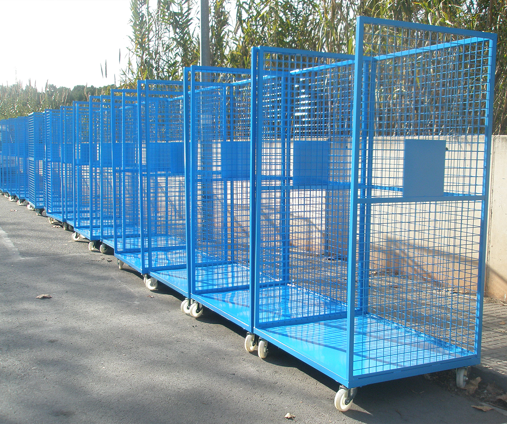

Para llevar la mercancía del área de importaciones la que se encuentra encima de semi lo que se hace es emplayar la mercancía colocarla en tarimas y acomodarla en un elevador del elevador en la planta baja es llevada a las plantas del sorter.
Teniendo como vida útil el playo el traslado entre ambas secciones.
Aunque al expresar esta observación se me comento que no había desperdicio pues el playo utilizado era reciclado. Considero pueda existir una alternativa.
Considero se esta deserdiciando este material en este proceso.
Adquirir jaulas metálicas para realizar el transporte entre estas secciones
Considero esta acción a largo plazo será bonifica monetariamente además que estaríamos reduciendo el impacto ambiental generado por la utilización de playo.
Diseñar el modelo de la jaula a la medida del elavador considerando aditamentos para poder utilizar los patines en ella.